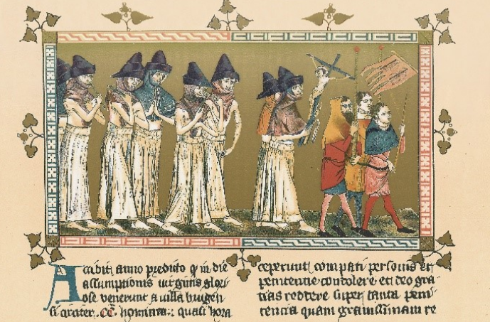
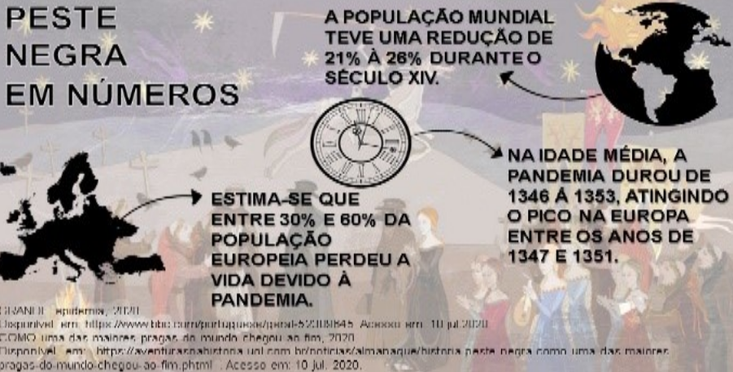

Peste Negra
A Peste Negra (1347-1353) teve início na Ásia central, espalhou-se por toda a Europa e África. Sua chegada ao continente europeu ocorreu devido às caravanas de comércio que vinham da Ásia através do Mar Mediterrâneo e aportavam nas cidades costeiras europeias, como Veneza e Gênova.
Isso aconteceu porque a cidade de Caffa, uma colônia genovesa, estava em guerra com o Canato da Horda Dourada e foi atacada com cadáveres infectados pela Peste. Com o alastramento da doença, os genoveses fugiram, espalhando, assim, a bactéria por locais como Constantinopla e Marselha (Praga de Marselha). Especula-se que o microrganismo tenha se originado na Idade antiga, com a queda do Império Romano e todos os conflitos que aconteciam na época, como a fragmentação dos poderes e o crescimento do mundo rural. Esse contexto ficou conhecido como Praga de Justiniano ou a primeira pandemia da história.
Na Europa, a propagação da doença deu-se por meio de ratos infectados com o bacilo Yersinia pestis que era transmitido para as pessoas quando essas eram picadas pelas pulgas, permitindo que a bactéria da peste multiplicasse no sistema digestivo do infectado. Num estágio mais avançado, a doença começou a se propagar por via aérea, por meio de espirros e gotículas.
A difusão dessa doença levou a morte por todo o continente europeu, estima-se que a Peste Negra tenha matado entre 30% a 60% da população da Europa, uma vez que ninguém sabia o que a causava. Isso naturalmente fez surgir todo tipo de especulação a respeito das causas da Peste. Alguns falavam que era um castigo divino e, principalmente, acusavam os judeus como responsáveis pelo fato de não serem da Europa e por, desde a Idade Antiga, viverem em constante migração, passando por várias regiões do mundo até se instalarem nos domínios do continente europeu.
Na realidade, os fatores que contribuíam com a propagação desta doença eram as precárias condições de higiene e de habitação que as cidades e vilas medievais possuíam, pois ofereciam condições para as infestações de ratazanas e de pulgas. A Peste Negra atuava de maneira fulminante e a pessoa que a contraía falecia em questão de dias, mais precisamente, segundo o historiador Hilário Franco Júnior, a pessoa doente falecia em até três dias após o contágio. A doença era identificada em três estágios:
- Primeiro Bubônica - Tem esse nome por conta dos bubos formado na pele. O sistema atingido neste caso é o sistema linfático. A olho nu, identificava-se feridas pretas, que se abriam e matavam os tecidos internos;
- Segundo Septicêmica - Atinge o sistema circulatório causando infecções que se espalham rapidamente nos órgãos, generalizando-se;
- Terceiro Pneumônica - Que causa ataque do sistema pulmonar e vias aéreas.
Giovanni Boccaccio, escritor italiano que presenciou a peste negra com os próprios olhos, relatou os sintomas e o alto grau de contágio da doença, mas também abordou o desmoronamento da ordem com a disseminação da peste, já que muitas autoridades eram contaminadas e faleciam. Além disso, as pessoas tiveram diferentes reações no período crítico da doença, segundo o escritor, muitos procuraram o isolamento, evitando manter qualquer tipo de contato com pessoas.
Com o tempo, os médicos perceberam que o contato com os doentes e com os corpos dos mortos não deveria acontecer. Com isso, os doentes eram isolados e o contato com eles era limitado àqueles que realizavam tratamentos médicos e até religiosos. Os padres foram um dos grupos que mais sofreram, pois tinham contado direto com os doentes e como muitos padres viviam em mosteiros, locais onde havia grande concentração de religiosos, muitos em idade avançada. Quando um padre contraía a doença, ela era rapidamente transmitida para outros. |
Pelo fato de não haver sacerdotes suficientes, os sepultamentos começaram a ser realizados em massa, tamanha a quantidade de pessoas que morriam. Todavia, com a percepção de que os cadáveres também eram vetores de contaminação, muitos passaram a abandonar as práticas de sepultamentos e começaram a incendiar os corpos dos falecidos. Estima-se que a quantidade de mortos possa ter chegado a 50 milhões, fazendo com que metade a 2/3 da população europeia tenha morrido.
A principal medida para prevenção da peste negra é identificar os locais onde a doença está ativa e notificar os órgãos públicos responsáveis, como a prefeitura. É necessário também evitar o contato direto com pessoas infectadas, principalmente se houver feridas expostas ou infecção pela peste pneumônica. Diante disso, tome as seguintes precauções se você vive ou passará por regiões onde ocorrem surtos de peste negra:
- Elimine potenciais focos de ratos e pulgas, tais como: pilhas de entulho, lenha e lixo;
- Não deixe alimentos para animais de estimação em áreas que os roedores podem facilmente acessar;
- Mantenha seus animais de estimação livre de pulgas e pergunte ao seu veterinário quais produtos irão funcionar melhor;
- Use repelente contra insetos.
O alto declínio populacional levou os proprietários de terra a aumentar os salários a fim de manter a mão-de-obra, esta que ficava cada vez mais escassa, e, consequentemente, melhorar as condições de trabalho. Esse enfraquecimento dos senhores de terra abriu espaço, inclusive, para o fim do feudalismo, já que, com a epidemia da Peste Negra e as alterações nas formas de posse, a maioria dos sobreviventes passou a possuir uma condição de vida muito melhor, mesmo após todas as tragédias que aconteceram, tornando, paradoxalmente, o século XV a época de melhor qualidade de vida, com uma grande disponibilidade de terras e a abolição parcial das obrigações feudais.
Entretanto, a epidemia foi um período ainda mais difícil para a parte da população que era judia ou cigana, pois, devido ao pouco conhecimento das ciências biológicas, o surgimento da doença era atribuído a elas, ocasionando uma grande tensão social durante toda a catástrofe.
Curiosidades:
- Eyam ou, como ficou conhecido, O vilarejo que venceu a peste, tomou fortes medidas de isolamento. Perante a orientação do padre William Mompesson, os moradores de Eyam decidiram se isolar, criando um perímetro delimitado por uma barreira de pedras com pequenos buracos, onde deixavam moedas encharcadas de vinagre, que acreditavam ter ação desinfetante. Todos prometeram não ultrapassar a barreira, até aqueles que não apresentavam sintomas. Comerciantes de vilarejos vizinhos pegavam o dinheiro e deixavam carne, grãos e enfeites em troca.
- Em novembro de 2019, na China, houve quatro casos de peste bubônica, onde dois destes casos foram conectados ao consumo de carne de animais selvagens. Casos de peste negra não são raros no país e nem fora dele, porém os surtos da peste em tão pouco tempo não acontecem com frequência. Na China, foram registrados 26 casos de peste negra, resultando em 11 mortes confirmadas entre 2009 e 2018. Em Madagascar, houve um surto com 300 casos em 2017.
- A doença é chamada de “peste negra” porque causa manchas negras na pele dos infectados. E é chamada de “bubônica” por provocar bubões ou bubos, inchaços infecciosos no sistema linfático, principalmente nas regiões das axilas e virilha.
- Muitas pessoas achavam que a peste era um castigo divino por causa dos pecados, como a ganância, luxúria, heresia e blasfêmia, para quem seguia alguma religião. A forma que eles achavam isso se resolveria era expurgar suas comunidades de hereges e outros causadores de problemas. Por isso, milhares de judeus foram massacrados em 1348 e 1349. Alguns homens juntaram-se às procissões, que viajavam de cidade em cidade, e participaram de exibições públicas em busca de penitência e punição. O grupo era chamado de Os Flagelantes e eles se torturavam na frente das pessoas, se autochicoteando para o perdão divino, mas isso fez com que mantivessem a ferida exposta à contaminação da doença, por conseguinte, transmitindo-a para outras cidades.
|  |  |
Para saber mais:
https://www.bbc.com/portuguese/geral-52389645
https://incrivelhistoria.com.br/peste-negra-historia-causas-tratamento/
https://mundoeducacao.uol.com.br/historiageral/peste-negra.htm
https://pt.m.wikipedia.org/wiki/Peste_Negra
https://rachacuca.com.br/educacao/historia/peste-negra/
https://www.google.com.br/amp/s/m.mundoeducacao.uol.com.br/amp/historiageral/peste-negra.htm
https://zap.aeiou.pt/coronavirus-licoes-peste-negra-311950
https://brasilescola.uol.com.br/historiag/pandemia-de-peste-negra-seculo-xiv.htm
https://escolakids.uol.com.br/historia/peste-negra-na-europa-medieval.htm
https://www.bbc.com/portuguese/noticias/2015/11/151120_vert_tra_peste_negra_lab
https://www.historiadomundo.com.br/idade-media/peste-negra.htm